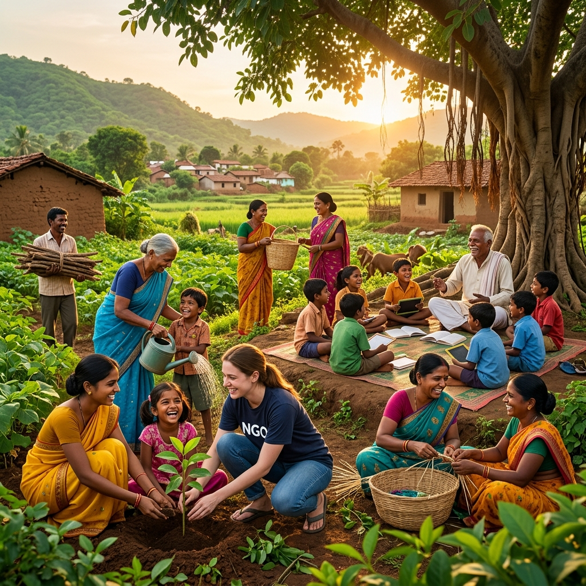
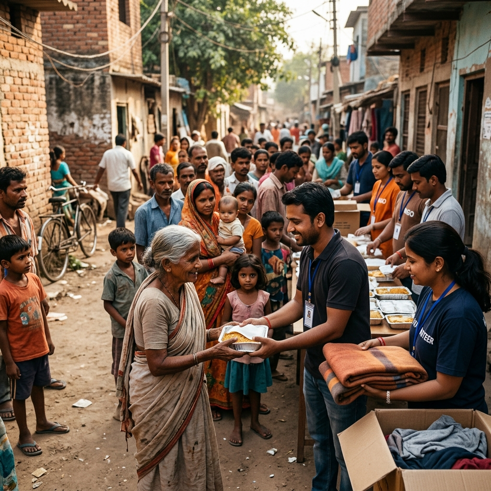
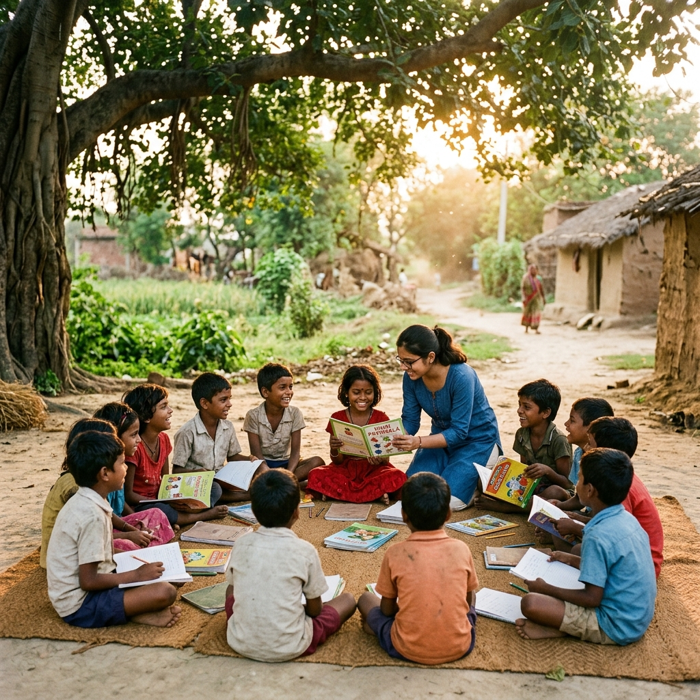
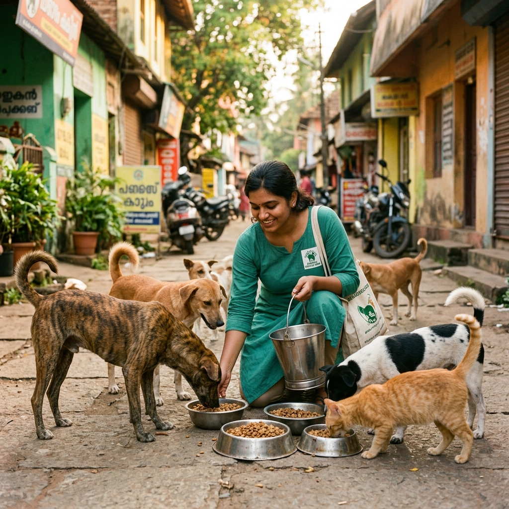
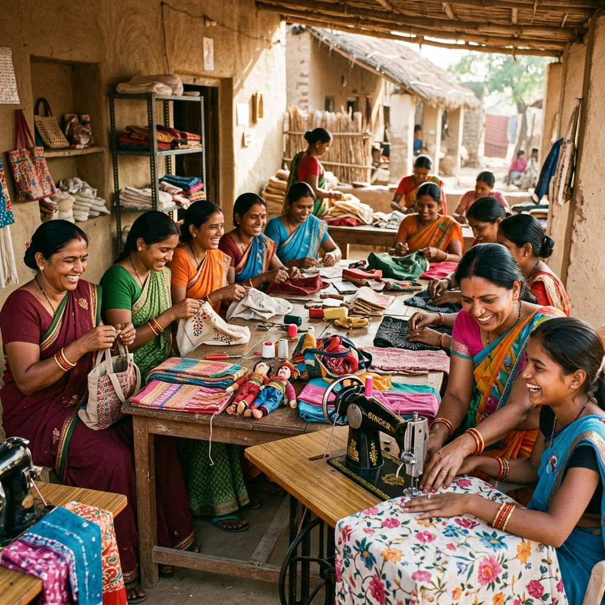
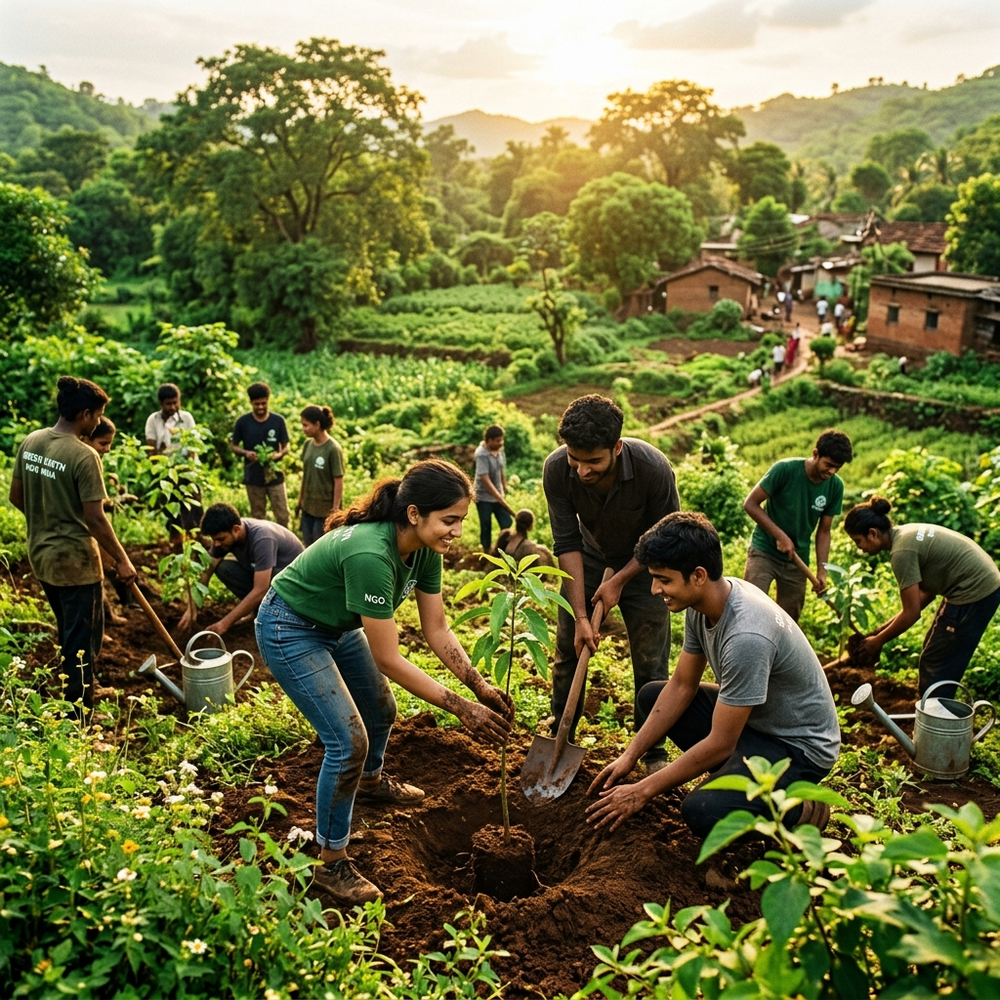

01
Community
Project Seva
Food & Basic Support
Providing food and clothing to underprivileged communities, serving humanity and helping address essential needs with compassion.
Explore Project →
A Section 8 nonprofit working across education, community support, women empowerment, animal welfare, environmental sustainability and skill development — building a more inclusive and compassionate society.

InAmigos Foundation was founded on September 23, 2020, by Mr. Govind Shukla (Founder & CEO). It is a Section 8 registered non-profit organization based in Chhattisgarh, working tirelessly to bring positive change in society through collective action, grassroots involvement, and a strong network of dedicated volunteers and partners.
Each initiative addresses a critical social need — from education and food security to women empowerment, animal welfare, environmental sustainability and youth skill development.
Providing food and clothing to underprivileged communities, serving humanity and helping address essential needs with compassion.
Explore Project →
02 EducationEnsuring quality education for underprivileged children through school support, basic digital literacy and life skills development.
Explore Project →
03 Animal WelfareA compassionate initiative dedicated to feeding stray animals, animal protection and rescue. The volunteer network feeds 50+ stray animals daily.
Explore Project →
04 EmpowermentEmpowering women through skill development, financial independence, rural self-help groups and menstrual hygiene awareness campaigns.
Explore Project →
05 EnvironmentPromoting environmental sustainability through tree plantation drives, awareness campaigns and eco-friendly practices. Over 20,000 saplings planted.
Explore Project →Enhancing employability through internship programs, skill training and employment readiness across areas including digital marketing, research, content writing and social work.
Explore Project →Every number represents real lives touched, communities strengthened and futures transformed. These figures are sourced from InAmigos Foundation's official platforms.
Behind every statistic are real communities transformed. These narratives reflect verified project-level outcomes from InAmigos Foundation's initiatives.
Through Project Bachpanshala, InAmigos Foundation is transforming the lives of underprivileged children by providing quality education, school support and life skills development. The initiative reaches children who would otherwise lack access to learning opportunities, helping them build a foundation for a brighter future.
Project Udaan is an empowerment initiative transforming the lives of women across India by providing skills, resources and self-help group support. Through skill development workshops and menstrual hygiene awareness programs, women are gaining financial independence and confidence.
Project Jeev is a compassionate initiative dedicated to helping stray animals. Through feeding programs, animal protection efforts and rescue operations, the volunteer network ensures that 50+ stray animals receive care and nourishment daily — embodying the foundation's commitment to all living beings.
Through tree plantation drives and environmental awareness campaigns, Project Prakriti has resulted in over 20,000 saplings being planted. The initiative supports sustainable living practices and aligns with InAmigos Foundation's vision for a healthier planet and cleaner communities.
Verified activities and campaigns from InAmigos Foundation's official channels and social media.
InAmigos Foundation organized an event highlighting the importance of water conservation and collective action to ensure clean water access for all communities.
View on Official Website →A community event focused on spreading joy, positivity and well-being through engaging activities and inspiring discussions organized by InAmigos Foundation.
View on Official Website →InAmigos Foundation celebrated the International Day of Women and Girls in Science, encouraging participation and awareness in the scientific community.
View on Official Website →For the past four years, InAmigos Foundation has been empowering young minds through Project Vikas — an internship initiative covering data operations, finance, research, content writing, digital marketing and social work.
Read on Official Blog →InAmigos Foundation promoted sustainable living through LiFE (Lifestyle for Environment) practices, encouraging communities to adopt eco-friendly habits for a greener future.
Read on Official Blog →A glimpse into the work happening across InAmigos Foundation's initiatives.
InAmigos Foundation maintains the highest standards of accountability and governance.
Join InAmigos Foundation's network of dedicated volunteers making a difference across education, community service, women empowerment, animal welfare and environmental sustainability. Every contribution counts.
Stay Connected
See campaigns, volunteer activities and stories from the InAmigos community across all platforms.